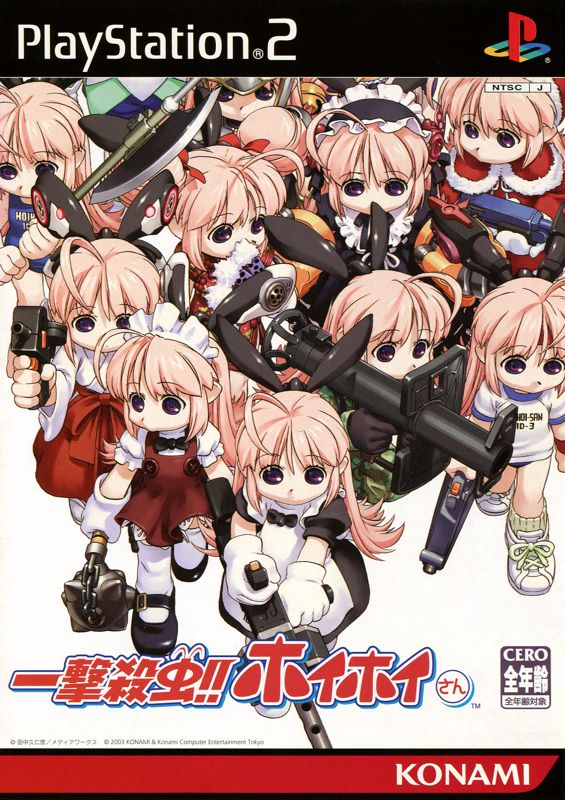
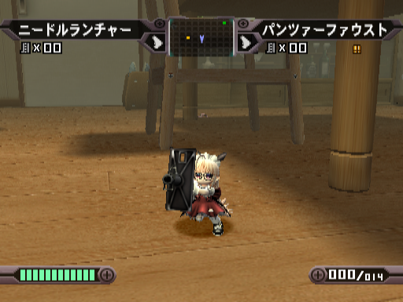
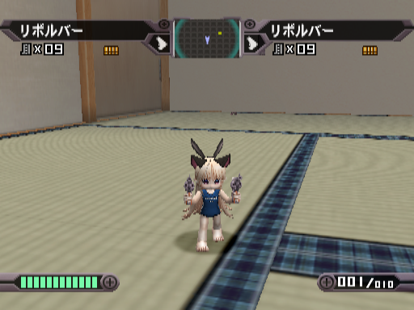
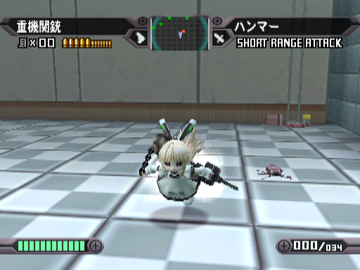

Ichigeki Sacchu!! Hoihoi-san
It's the year 20XX. Bugs have become immune to all pesticides and are multiplying at an incredible rate. This has caused quite a problem for the human race. However!! The medical company Mars Pharmaceuticals took the situation seriously and created a compact exterminator robot to replace the old forms of pesticide that had been rendered useless. 11.5 cm high maid robot Interceptor Doll "Ichigeki Sacchu Hoihoi-san (Price 29,800¥ plus tax)" now on sale!!
Ichigeki Sacchu!! Hoihoi-san is a bug exterminating action game for the PlayStation 2. Take control of "Hoihoi-san", the titular battle doll and go to combat with cockroaches, ants, bees, termites, competing products(!?), and more.
Hoihoi-san started as a one-page manga by Kunihiko Tanaka (character designer for the Xenogears, Xenosaga, and Xenoblade Chronicles series) serialized in Dengeki Daioh.
Hoihoi-san is more than just a pesticide, she's also a member of your family. Mars Pharmaceuticals recognizes this and offers many customization options. From a waitress dress to a sukumizu, Hoihoi-san can be customized to your liking. If you fill out your points card you might get a chance to receive the coveted nekomimi!
The game features 3 main mission types, assault missions where you seek and destroy all bugs in a level, defense missions where you must protect bug-attracting foodstuffs like cake (put your damn food away, Aburatsubo-kun!), and intense boss battles that will force you to strategize and come up with the optimal load-out to overcome a great challenge. Try to aim for an A-Rank!
I loved playing Ichigeki Sacchu!! Hoihoi-san! It's combination of moe and creepy was awesome, and customizing Hoihoi-san with my preferred outfits and weapons made me feel like a real Hoihoi-san otaku customizing my own exterminator robot.
The game controls are simple, by utilizing only 4 buttons Hoihoi-san's response to your commands feel natural. It takes no time at all to get comfortable with the gameplay. While being easy to control, the game still offers quite a challenge and it isn't rare to find yourself retrying a stage to try to receive a higher rank. This gives Ichigeki Sacchu!! Hoihoi-san a ton of replayabilty. I finished the games missions in just 3 sittings, so the added fun of replaying levels for rank is a nice bonus.
Watch out for level 2-6. Rumour has it that getting an A-Rank will earn you a Hoihoi-san gothic lolita dress...